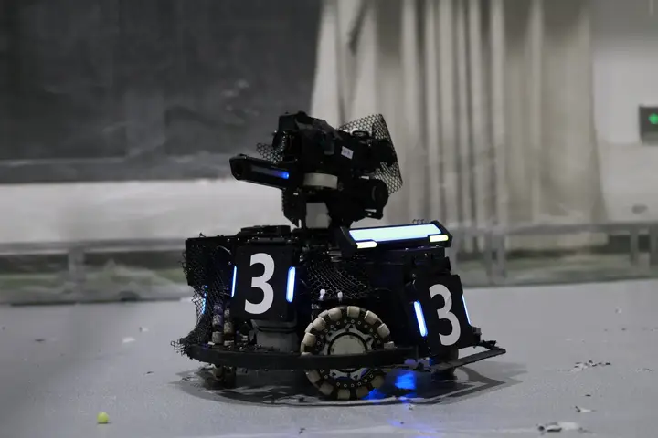
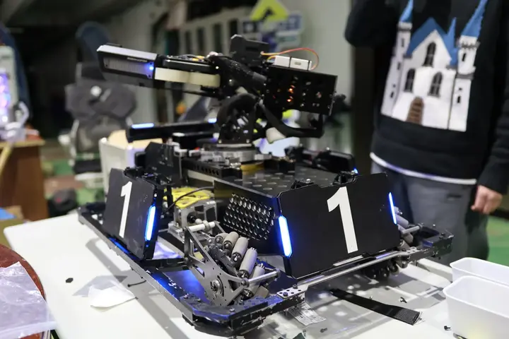
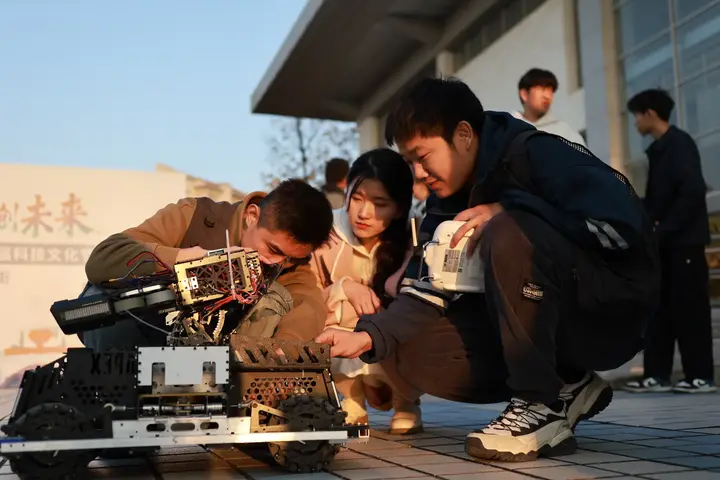

关于 POTENTIAL
一支由本科生组成的机甲战队，把课堂里的力学、电路与算法， 变成赛场上能跑、能打、能赢的机器人。
Profile
从一张图纸
到一台能上场的机甲
Potential 战队由南京邮电大学工程实验教学部创建并指导。战队以 RoboMaster 机甲大师系列赛事为主线， 自主完成机械结构设计、嵌入式电控开发、视觉算法与整机调试，并独立承担赛事运营与宣传。
工程实验教学部在场地、设备及技术支持上为战队提供了坚实保障—— 这意味着队员可以在真实的加工与测试环境中，把每一次改动快速验证为可上场的性能提升。
- 战队名称Potential · 潜能之队
- 所属高校南京邮电大学
- 依托单位工程实验教学部（创建并指导）
- 主攻赛事RoboMaster 机甲大师赛 · 高校联盟赛 / 超级对抗赛
- 战队口号潜心高远，此志无双
- 基地南京邮电大学仙林校区（南京市栖霞区文苑路 9 号）
- 技术方向机械结构 · 嵌入式电控 · 视觉算法 · 软件与仿真 · 运营宣传
- 最佳战绩RoboMaster 2026 机甲大师高校联盟赛（江苏站）季军 · 校史最佳



全流程自研
从结构建模、加工装配到电控与视觉，整机由队员自主完成，技术栈完整、可迭代、可传承。
以赛场为标准
所有设计决策最终都要接受对抗赛的检验：稳定性、响应速度与容错能力，比纸面参数更重要。
带训与传承
老队员带新队员，把调试经验沉淀为文档与规范，让每一届都能站在上一届的肩膀上起跑。
一年的时间，
被切成六个阶段
RoboMaster 的赛季以规则发布为起点。规则一变，方案就要重算—— 这正是工程师最真实的日常。
规则研判
逐条拆解新赛季规则，评估改动对兵种定位、尺寸与功率预算的影响。
方案设计
结构、电控、视觉三线并行出方案，用评审会筛掉不可行的想法。
打样与加工
从图纸到实物：加工、装配、走线，把设计意图兑现成可用的零件。
校内赛验证
在校内赛中第一次真机对抗，暴露问题、收集数据、快速迭代。
联盟赛冲刺
高强度集训，围绕稳定性与临场策略反复演练，直到每个动作都成为肌肉记忆。
复盘与沉淀
比赛结束不是终点：复盘文档、代码与结构归档，成为下一赛季的起点。
五个方向，
一台整机
没有人能独自造出一台机器人。分工让我们走得更深，协作让我们走得更远。
机械结构
Mechanical整机布局、传动与发射机构设计，兼顾强度、轻量化与可维护性；从三维建模到加工装配的完整链条。
嵌入式电控
Embedded主控固件、电机驱动与功率管理，自研电调与总线通信让底盘与云台的响应更直接、更可控。
视觉算法
Vision装甲板识别、目标跟踪与弹道解算，让云台在高速对抗中依然稳、准、快。
软件与仿真
Software上位机调试工具、数据回放与仿真验证，让「改一版试试」的成本尽可能低。
运营与宣传
Operations招新、赛事记录、影像与对外沟通。让队伍被看见，也让技术之外的软实力成为战力。